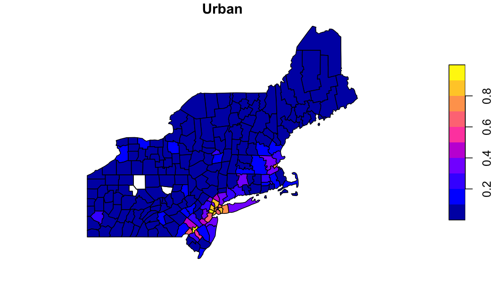
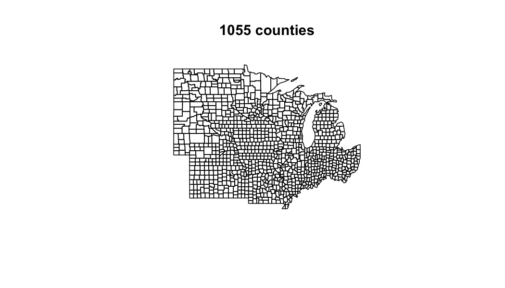

In zonal categorical data is handled with execute_zonal_cat which computes the relative proportion of a numeric class in each aggregation unit. In the following we illustrate its use using a mosaiced 1km grid containing MODIS 2019 land cover.
Grid
file = '2019-01-01.tif'
(r = terra::rast(file))## class : SpatRaster
## dimensions : 2896, 4616, 1 (nrow, ncol, nlyr)
## resolution : 1000, 1000 (x, y)
## extent : -2357000, 2259000, 277000, 3173000 (xmin, xmax, ymin, ymax)
## coord. ref. : +proj=aea +lat_0=23 +lon_0=-96 +lat_1=29.5 +lat_2=45.5 +x_0=0 +y_0=0 +datum=NAD27 +units=m +no_defs
## source : 2019-01-01.tif
## name : Land_Cover_Type_1Looking at the grid we can see in consists of 13367936 grid cells each with a 1000 meter by 1000 meter resolution. Additionally, there are 18 unique values in the grid (17 landcover and one nodata value).
Example 1: Basic Use
First, we want to identify the percent of each land cover within each county in the USA Northeast. Doing this follows the same process as all zonal workflows and requires (1) identifiying the aggregation units, (2) building a weight grid and (3) running the intersection.
Define aggreation units
AOI = AOI::aoi_get(state = "Northeast", county = "all")
plot(AOI$geometry, main = paste(nrow(AOI), "counties"))
Build a weight grid and execute intersection
system.time({
lc = execute_zonal_cat(file, geom = AOI, "geoid")
})## user system elapsed
## 2.776 1.226 4.139
glimpse(lc)## Rows: 1,998
## Columns: 3
## $ geoid [3m[38;5;246m<chr>[39m[23m "23003", "23003", "23003", "23003", "23003", "23003", "2…
## $ value [3m[38;5;246m<dbl>[39m[23m 8, 13, 10, 4, 5, 9, 12, 14, 17, 1, 11, 4, 5, 8, 10, 1, 5…
## $ percentage [3m[38;5;246m<dbl>[39m[23m 0.1333440, 0.0012883, 0.0137853, 0.1660485, 0.6205781, 0…Exploring the data
to_plot = lc %>%
tidyr::pivot_wider(names_from = value, values_from = percentage) %>%
right_join(AOI) %>%
st_as_sf()
plot(to_plot['12'], main = "Croplands")
plot(to_plot['13'], main = "Urban")
Example 2: Definining Classes
While the above works, callinging on fields by there numeric ID is prone to error. Instead, this example shows how a reclassification table can be supplied to modify the column headings of the output table.
Define Aggregation Units
AOI = AOI::aoi_get(state = "North Central", county = "all")
plot(AOI$geometry, main = paste(nrow(AOI), "counties"))
Define Reclass Table
A reclassification table tells us what each numeric value represents in a categorical raster. Below, we use a CSV file to define this mapping. The schema used is that one column must be named “from” - this is the exisiting data values, and one column must be named “to” - this is the desired column headings.
## from to
## 1 1 evergreen_needle
## 2 2 evergreen_broad
## 3 3 deciduous_needle
## 4 4 deciduous_broad
## 5 5 mixed_forest
## 6 6 closed_shrubBuild a weight grid and execute intersection
system.time({
lc = execute_zonal_cat(file, geom = AOI, ID = "geoid", rcl = rcl)
})## user system elapsed
## 6.404 2.013 8.822
glimpse(lc)## Rows: 7,103
## Columns: 3
## $ geoid [3m[38;5;246m<chr>[39m[23m "27077", "27077", "27077", "27077", "27077", "27077", "2…
## $ value [3m[38;5;246m<chr>[39m[23m "woody_savanna", "deciduous_broad", "grassland", "mixed_…
## $ percentage [3m[38;5;246m<dbl>[39m[23m 0.355295, 0.095976, 0.045633, 0.141788, 0.015364, 0.2559…
Further user-based aggregates
In the MODIS land cover scheme there are 5 classes loosly representing forest. If wanted to aggregate these to a single forest class, we can use the output zonal table.
Compare with exactextractr
From the exactectractr vignettes there is an example to compute class statisitcs using dplyr. Here we compare that appraoch, to one supplimented with data.table, to zonal with pre-compted weights, and to a single zonal execution.
library(raster)
library(exactextractr)
library(data.table)
# exactextract with dplyr
exactextract_dplyr = function(file, AOI) {
exact_extract(raster(file), AOI, function(df) {
df %>%
mutate(frac_total = coverage_fraction / sum(coverage_fraction)) %>%
group_by(geoid, value) %>%
summarise(freq = sum(frac_total), .groups = "keep")
}, summarize_df = TRUE, include_cols = "geoid", progress = FALSE)
}
# exactextract with data.table
exactextract_dt = function(file, AOI){
exact_extract(raster(file), AOI, function(df) {
dt = setDT(df)
dt$frac_total = dt$coverage_fraction / sum(dt$coverage_fraction)
dt[, .(freq = sum(frac_total, na.rm = TRUE)), by = .(value)]
}, summarize_df = TRUE, include_cols = "geoid", progress = FALSE)
}
# pre-compute weights
w = weighting_grid(file, AOI, "name")
bnch <- bench::mark(
iterations = 1, check = FALSE, time_unit = "s",
exactextract_dplyr_out = exactextract_dplyr(file, AOI),
exactextract_dt_out = exactextract_dt(file, AOI),
zonal_full = execute_zonal_cat(file, AOI, "geoid"),
zonal_stage_weights = execute_zonal_cat(file, w = w)
)